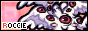
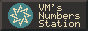
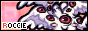
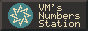

links.
At the time of writing I do not have a button to share unfortunately. Please check out my friends and various inspirations while you're visiting, though.
First listed are other places I lurk on online. Sites and blogs of others are listed alphabetically and split between people I have contacted somehow on neocities and people whose sites inspired me.
elsewhere.
- Social media
- Trackers
- Other
friends & neighbors.


 



inspirations.